Your first project in Quartus
Today you do everything yourself, by hand, in the Quartus window: create a project, choose the chip, connect pins, compile, and load it into the board. The result is small: a switch that turns on an LED. The skill is big.
Why by hand?
From lesson 3 on, the chat does these steps for you with one command each. After today you'll know exactly what those commands do, and you could do it all without the chat.
About 45 minutes. The chat opens Quartus for you and checks your work.
A Quartus project is a folder with a few files
.qpf: the project file. Quartus opens this..qsf: the settings: which chip, which files, which pin each signal uses. Plain text: you can read it in VS Code..sv: your design, in SystemVerilog..sof: the result of compiling, the file you load into the chip.
first_led.sv into your folder:
my_designs\lessons\02_first_project\first_led. It tells you the full path.Open Quartus
The chat starts Quartus for you. It can take half a minute.
The very first time, a window asks about licensing. Choose Run the Quartus Prime software and click OK. The Lite edition is free; there is nothing to buy.
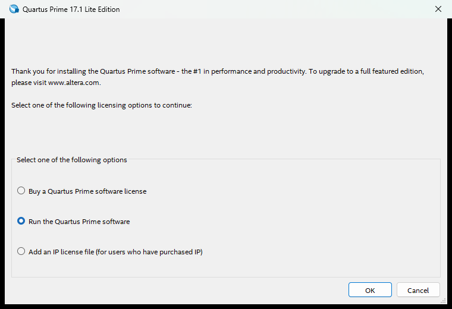
Then the main window opens with a Home page. Click New Project Wizard.
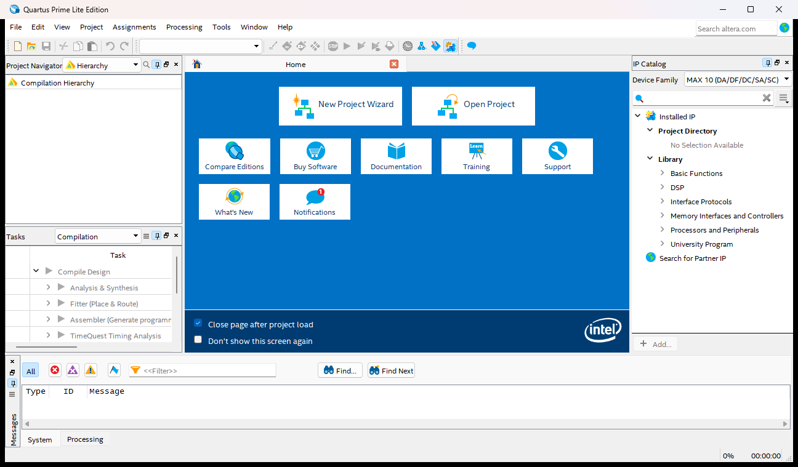
Where, and what's it called
The first page is an introduction: click Next. Then:
- Working directory: the folder the chat gave you (ends in
02_first_project\first_led). - Project name:
first_led - Top-level design entity: fills in by itself,
first_led. It must be exactly the module's name in the Verilog file. - Click Next.
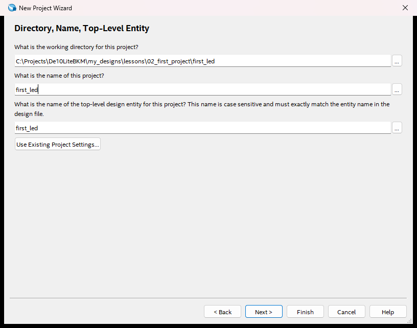
An empty project, with your file
Project Type: keep Empty project, click Next.
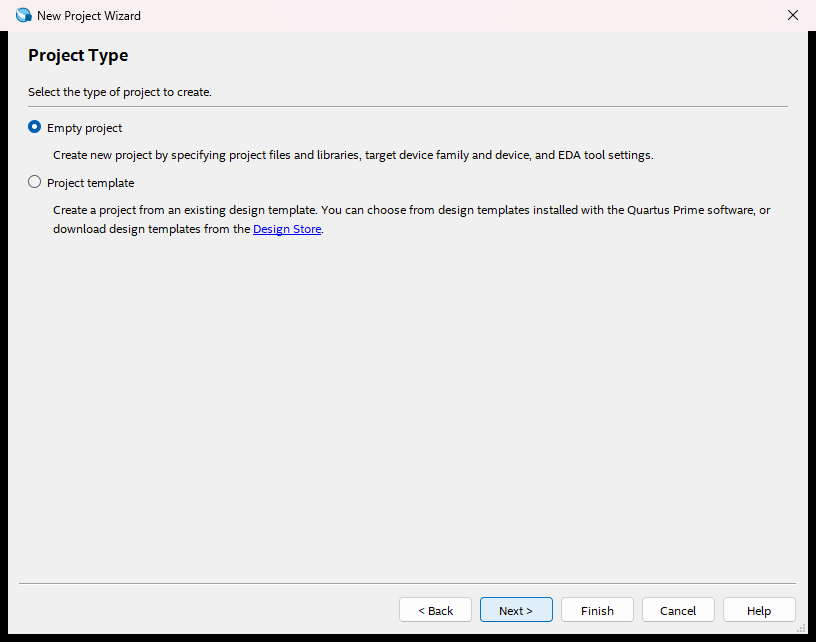
Add Files: click Add All. first_led.sv appears in the list. Click Next.
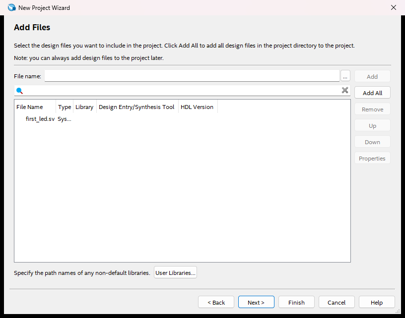
Nothing appears? The working directory on the previous page is wrong: click Back.
Tell Quartus which chip
Quartus builds for one exact chip, and there are hundreds. Ours is printed on the big black chip on the board:
10M50DAF484C7G
- Family: MAX 10 (already chosen).
- Type
10M50DAF484C7Ginto Name filter. - Click the one line left in the list. Click Next.
The name tells a lot: 10M = MAX 10, 50 = about 50 thousand logic elements, F484 = 484 pins, C7 = speed grade.
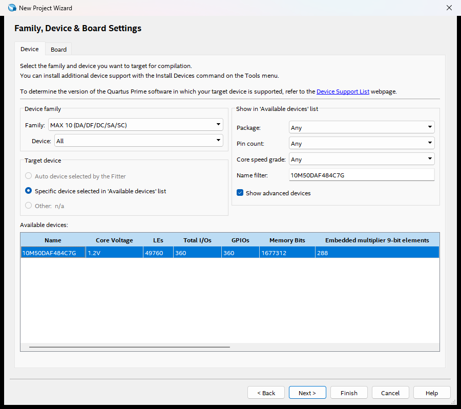
Last two pages, then Finish
EDA Tool Settings: leave everything at <None>. Click Next.
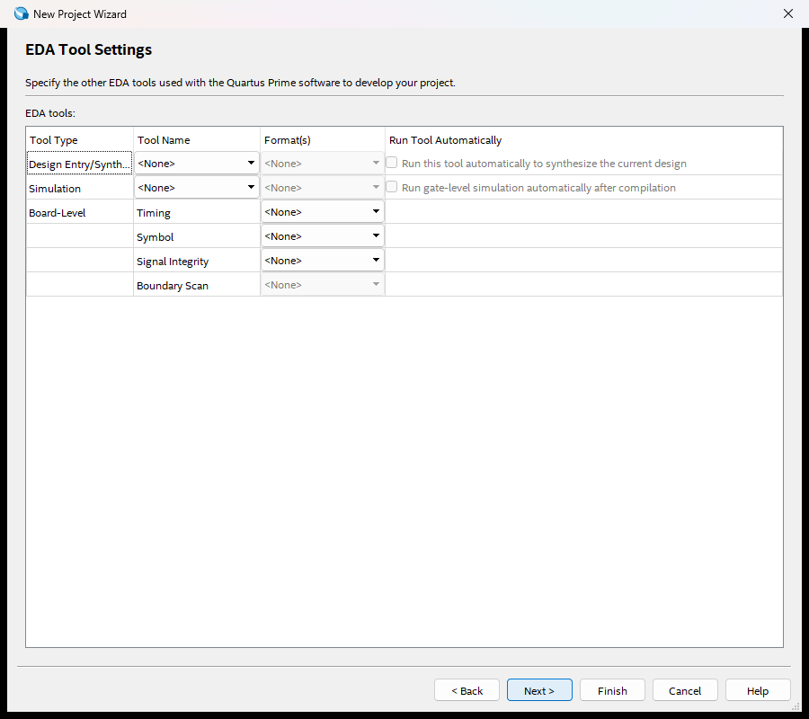
Summary: check the folder, the name and the device. Click Finish.
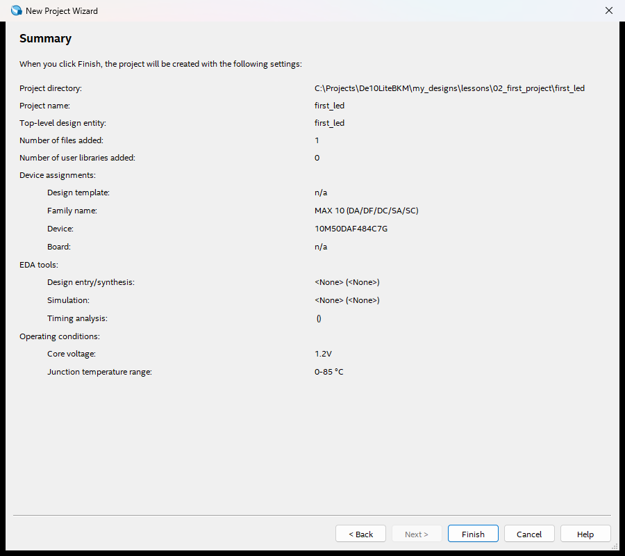
Read your design: five lines
module first_led ( input sw0, output led0 ); assign led0 = sw0; endmodule
module first_led: a box called first_led. That's your whole circuit.input sw0,output led0: the box's two wires to the outside world. One comes in, one goes out. The names are ours: they don't mean anything to the chip yet.assign led0 = sw0;: connect them. Whatever the switch says, the LED shows.endmodule: the end of the box.
first_led.sv in VS Code and find each line.Let Quartus read your design
Menu Processing > Start > Start Analysis & Synthesis (or Ctrl+K).
Quartus reads the Verilog, checks it, and finds the inputs and outputs. A few seconds later: successful.
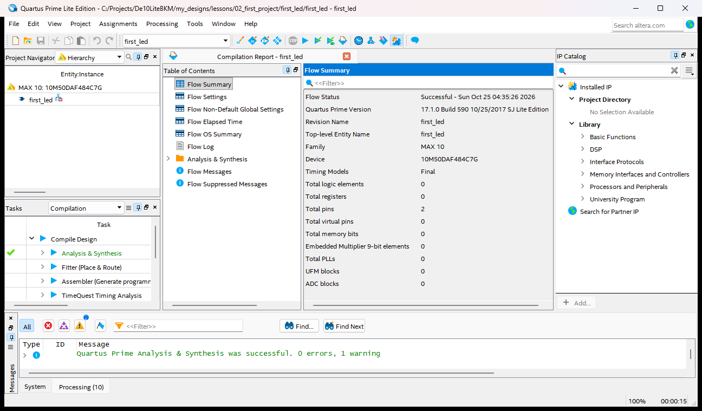
Pins: which leg of the chip is which
The chip has 484 little balls underneath (that's the "484" in its name). Each one is a pin.
When Terasic made the board, they wired switch SW0 to pin C10, and LED LEDR0 to pin A8. That's copper on the board: it can't change.
Quartus doesn't know how the board is wired. So you tell it: sw0 is on pin C10, led0 is on pin A8.
The Pin Planner
Menu Assignments > Pin Planner. At the bottom is a table with your two signals.
- Location of led0: double-click the cell, type
A8, Enter. For sw0:C10. - I/O Standard: it says 2.5 V (default), which is wrong for our board. Double-click, open the list, choose 3.3-V LVTTL. Typing
3jumps near it. - Two red dots appear on the chip map: your pins. Close the Pin Planner; it saves by itself.
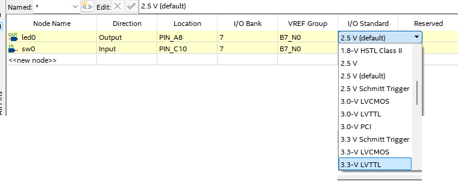
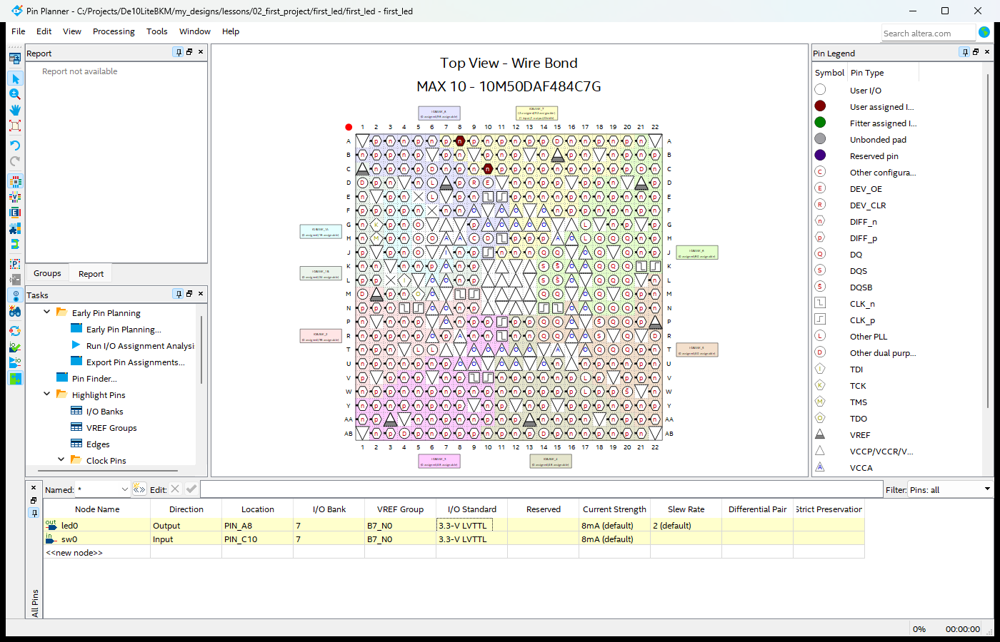
Ask the chat to check your project
Before compiling, tell the chat: "check my project". It reads your .qsf (the settings file) and
checks every setting you made. Something wrong? It tells you which setting and where to fix it in Quartus.
Curious? Open first_led.qsf in VS Code. Your clicks became plain lines of text:
set_location_assignment PIN_A8 -to led0
set_location_assignment PIN_C10 -to sw0
set_instance_assignment -name IO_STANDARD
"3.3-V LVTTL" -to led0
Compile
Menu Processing > Start Compilation (or Ctrl+L). About 30 seconds. The Tasks panel ticks off each step from lesson 1: synthesis, fitter, assembler, timing.
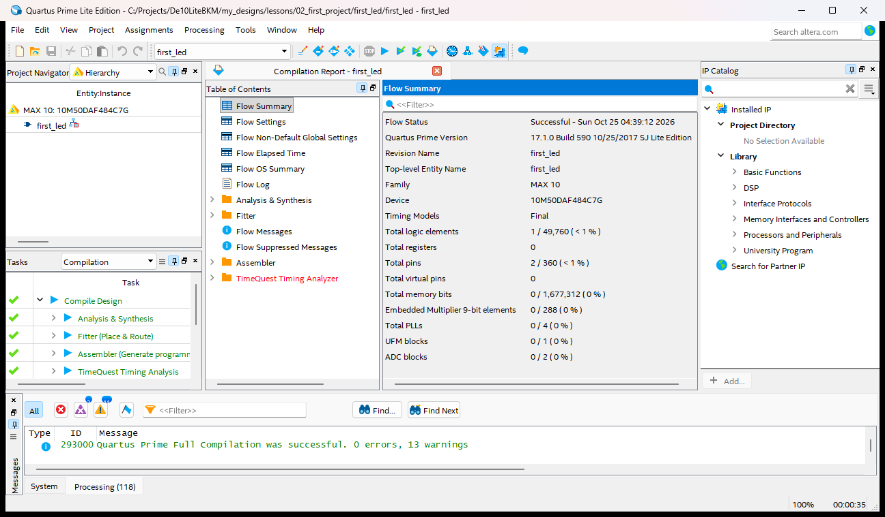
Load it into the chip
- Menu Tools > Programmer. Your file
output_files/first_led.sofis already in the list. - It says No Hardware? Click Hardware Setup, double-click USB-Blaster, click Close.
- Click Start. A few seconds: 100% (Successful).
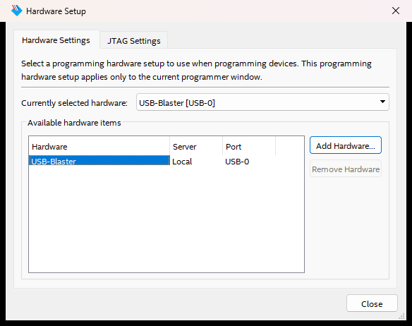
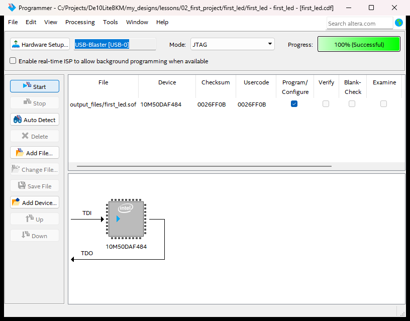
Flip SW0
Flip switch SW0 up: LED0 lights. Down: it goes out. That's your design, running in the chip.
The other LEDs glow a little?
Normal. Pins your design doesn't use get a weak pull-up inside the chip, enough to make an LED glow faintly. Only LED0 follows your switch.
The number digits are dark?
Same reason: their segments light up on 0, and the weak pull-up gives them a 1.
The screen shows an old picture?
The LCD keeps the last picture it was sent. Your design doesn't use the screen at all.
Make it yours: SW9 drives LED9 too
Now the whole flow once more, on your own:
- In VS Code, add to
first_led.svan inputsw9, an outputled9, and a line that connects them. (Look at how sw0 and led0 are written, and follow the pattern.) Save. - In Quartus: Ctrl+K so it sees the new names.
- Pin Planner: sw9 on
F15, led9 onB11, both 3.3-V LVTTL. - Ask the chat to check, then compile (Ctrl+L) and program.
- Flip SW9.
The fast way: what the chat does from now on
You've done every step by hand. From lesson 3 on, the chat does the same steps with commands:
| By hand today | The chat's command |
|---|---|
| Wizard + Pin Planner | new_project.py |
| Compile (Ctrl+L) | de10.py build |
| Programmer, Start | de10.py program |
How does it know the pins?
The course keeps a list of every pin on the board (lib/board/de10_lite_pins.csv), using the board's own names:
SW[0] is C10, LEDR[0] is A8, and so on. If your ports use those names, the pins are filled in for you.
That's why later lessons call their inputs SW and their outputs LEDR.
Two questions, in the chat
The chat asks you these, one at a time. Your own words; a hint is always OK.
- Why did we have to tell Quartus the pins?
- Which file did you load into the chip, and what is in it?
Not sure? Slides 10 and 2.
Enter your completion code
When your project, the board, your change and the quiz all pass, the chat gives you a code. Type it here.
What you learned
- A project = a folder:
.qpf,.qsfsettings, your.sv, and the.sofresult. - Quartus must know the exact chip, and which pin each signal uses, with its voltage standard.
- Compile, then program: the
.sofgoes over USB into the chip.
Next: lesson 3, your first simulation
Go to the chat and type teach me.